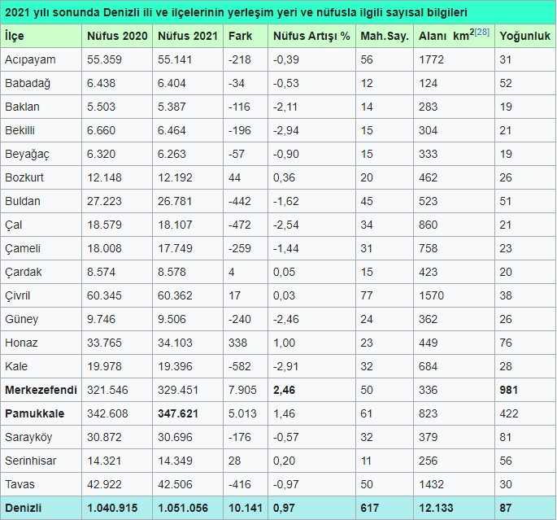

Güncel Nüfus Değerleri (TÜİK 4 Şubat 2022 verileri[27]) Denizli İl Nüfusu: 1.051.056 (2021 sonu). İlin yüzölçümü 12.133 km2'dir. İlde km2'ye 87 kişi düşmektedir. (Yoğunluğun en fazla olduğu ilçe: 981 kişi ile Merkezefendi’dir) İlde yıllık nüfus artış oranı %0,97 olmuştur. Nüfus artış oranı en yüksek ve en düşük ilçeler: Merkezefendi (%2,46)- Bekilli (-% 2,94) 04 Şubat 2022 TÜİK verilerine göre 19 İlçe ve belediye, bu belediyelerde toplam 617 mahalle bulunmaktadır.
